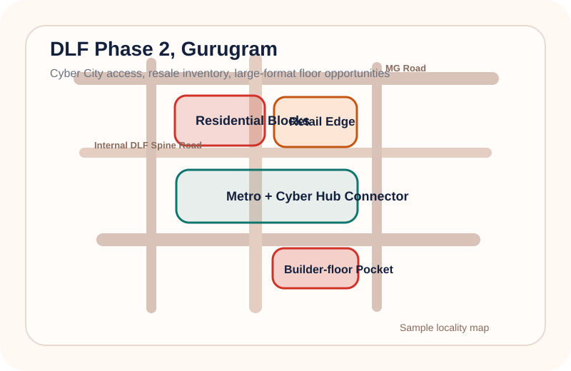

{kind=link}
Mid to premium residential with a strong builder-floor and family-use tilt.
Gurugram map sheet
Sector 57, Gurugram: a cleaner map for family-use buyers and builder-floor conversations.
This sheet highlights the sector core, school belt, market pocket, and access spines that usually matter first in client conversations.
Builder floors
Family buyers
Golf Course Extension
Roughly ₹3 Cr to ₹6 Cr depending on plot size, fit-out, and floor rights.
Upgrade families, end users prioritising schools, and buyers seeking mature sectors.
Builder floors, resale apartments, independent homes, and nearby premium launches.
Why this pocket converts
- Easy movement toward Golf Course Extension Road and central Gurugram sectors.
- Reliable family-use demand because the daily-living layer is already mature.
- Low-rise product remains easier to explain when the locality map is clear.
What to point out on the call
- Which lanes have newer builder-floor stock and better park adjacency.
- Where schools and market pockets sit relative to the buyer’s commute needs.
- How the sector compares with 45, 46, and Golf Course Extension alternatives.
Inventory paths
What users can unlock from this map page.
Primary Projects
Nearby launches and premium projects that still serve this catchment.
Open launch inventoryResale
Ready and semi-ready resale apartments within the family-use search corridor.
Open resale flowBuilder Floors
The strongest fit for this sector, especially for end-user family mandates.
Open builder floorsPremium Deals
Higher-conviction stock and partner-first inventory for serious buyers.
Open premium accessNearby map sheets
Continue into adjacent pockets.

{kind=link}